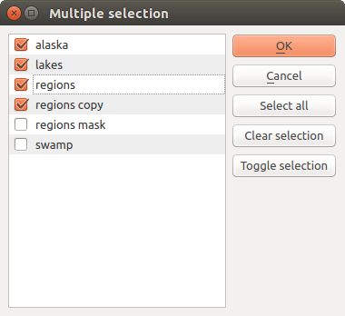

28.3. ကိရိယာများအစု (The Toolbox)
Processing Toolbox သည် processing GUI ၏အဓိကအရာ (element) ဖြစ်ပြီး နေ့စဉ်လုပ်ငန်းများတွင် အသုံးပြုရသကဲ့သို့သော အရာဖြစ်ပါသည်။ Tool အစုများကိုချဲ့ထွင်အသုံးပြုရန်အတွက် Providers ၊ ကိုယ်ပိုင် models နှင့် scripts များဟုခေါ်သော မတူညီသည့် block (အကွက်)များထဲတွင် အုပ်စုဖွဲ့ထားသော အသုံးပြုနိုင်သည့် algorithms များအားလုံး၏စာရင်းကိုဖော်ပြပေးပါသည်။ ထို့ကြောင့် toolbox သည် input အမျိုးမျိုးကို တူညီသော algorithm ဖြင့် စေခိုင်းလုပ်ဆောင်မှု အမျိုးမျိုးပါဝင်သော တစ်ခုတည်း လုပ်ဆောင်မှုအနေဖြင့် သို့မဟုတ် အစုအဖွဲ့လိုက်လုပ်ဆောင်မှု (batch process) အနေဖြင့် လုပ်ဆောင်ရန် ဝင်ရောက်သုံးစွဲရမည့်နေရာ (access point) ဖြစ်ပါသည်။

Fig. 28.6 Processing Toolbox
Processing settings dialog ထဲတွင် provider များကို အဖွင့်/အပိတ်ပြုလုပ်နိုင်ပါသည်။ ပုံမှန်အားဖြင့် third-party application များကို မမှီခိုသော provider များသာ (QGIS element များကိုအသုံးပြုရန် လိုအပ်သော provider များသာ) ပွင့်နေမည်ဖြစ်ပါသည်။ ပြင်ပ application များကိုလိုအပ်သော algorithm များသည် ထပ်ဆောင်း ပြင်ဆင်သတ်မှတ်မှုများ လိုအပ်နိုင်ပါသည်။ ဒီလမ်းညွှန်စာအုပ်၏ နောက်လာမည့် သင်ခန်းစာ ထဲတွင် provider များပြင်ဆင်သတ်မှတ်ခြင်းအကြောင်းများကို ရှင်းပြပေးသွားပါမည်။
Toolbox dialog ၏ အပေါ်ပိုင်းတွင် အောက်ပါတို့ကို လုပ်ဆောင်ရန် tool များအစုကို တွေ့ရပါမည် -
Models နှင့် အလုပ်လုပ်ရန် အတွက် - Create New Model… (Model အသစ်ဖန်တီးရန်) ၊ Open Existing Model… (ရှိပြီးသား model ကို ဖွင့်ရန်) နှင့် Add Model to Toolbox… (Toolbox ထဲသို့ model ကို ပေါင်းထည့်ရန်)၊
 Scripts နှင့် အလုပ်လုပ်ရန် အတွက် - Create New Script… (Script အသစ်ဖန်တီးရန်) ၊ Create New Script from Template… (Template မှ script အသစ်ဖန်တီးရန်)၊ Open Existing Script… (ရှိပြီးသား script ကိုဖွင့်ရန်) နှင့် Add Script to Toolbox… (Toolbox ထဲသို့ script ကိုပေါင်းထည့်ရန်)၊
Scripts နှင့် အလုပ်လုပ်ရန် အတွက် - Create New Script… (Script အသစ်ဖန်တီးရန်) ၊ Create New Script from Template… (Template မှ script အသစ်ဖန်တီးရန်)၊ Open Existing Script… (ရှိပြီးသား script ကိုဖွင့်ရန်) နှင့် Add Script to Toolbox… (Toolbox ထဲသို့ script ကိုပေါင်းထည့်ရန်)၊ History panel ကိုဖွင့်ရန်၊
History panel ကိုဖွင့်ရန်၊ Results Viewer panel ကိုဖွင့်ရန်၊
Results Viewer panel ကိုဖွင့်ရန်၊ Edit Features In-Place ခလုတ်ကိုအသုံးပြုပြီး in-place modification mode ဆီသို့ toolbox ကိုအဖွင့်အပိတ်လုပ်ရန် - layer အသစ်တစ်ခုကို output မထုတ်ပဲ အသုံးပြုနေသော layer ပေါ်တွင်စေခိုင်းလုပ်ဆောင်ရန်အတွက် သင့်တော်သော algorithm များကိုသာပြသမည်ဖြစ်သည်။
Edit Features In-Place ခလုတ်ကိုအသုံးပြုပြီး in-place modification mode ဆီသို့ toolbox ကိုအဖွင့်အပိတ်လုပ်ရန် - layer အသစ်တစ်ခုကို output မထုတ်ပဲ အသုံးပြုနေသော layer ပေါ်တွင်စေခိုင်းလုပ်ဆောင်ရန်အတွက် သင့်တော်သော algorithm များကိုသာပြသမည်ဖြစ်သည်။ Options dialog ကိုဖွင့်ရန်။
Options dialog ကိုဖွင့်ရန်။
{kind=link}
ကိုယ်အသုံးပြုလိုသော tool များကိုလွယ်ကူစွာရှာဖွေရန်အတွက် ဤ toolbar ၏အောက်တွင်  Search… box တစ်ခုရှိပါသည်။ စာသား box ပေါ်တွင် အသုံးပြုလိုသော စာလုံး သို့မဟုတ် စာအစု ကို ရိုက်ပြီးရှာနိုင်ပါသည်။ စာရိုက်လိုက်သည်နှင့် ရိုက်ထားသောအမည် သို့မဟုတ် အဓိကစာလုံးများ (keywords) နှင့်သက်ဆိုင်သော algorithm များ၊ model များနှင့် toolbox များကိုသာ toolbox ထဲတွင်ပြသပေးမည်ဖြစ်ပါသည်။
Search… box တစ်ခုရှိပါသည်။ စာသား box ပေါ်တွင် အသုံးပြုလိုသော စာလုံး သို့မဟုတ် စာအစု ကို ရိုက်ပြီးရှာနိုင်ပါသည်။ စာရိုက်လိုက်သည်နှင့် ရိုက်ထားသောအမည် သို့မဟုတ် အဓိကစာလုံးများ (keywords) နှင့်သက်ဆိုင်သော algorithm များ၊ model များနှင့် toolbox များကိုသာ toolbox ထဲတွင်ပြသပေးမည်ဖြစ်ပါသည်။
Note
Algorithm များစာရင်း၏ အပေါ်ဆုံးတွင် နောက်ဆုံးအသုံးပြုခဲ့သော tool များကိုပြသပေးသောကြောင့် ၎င်းတို့ကို ပြန်လည်လုပ်ဆောင်လိုလျှင် လွယ်လွယ်ကူကူရှာတွေ့နိုင်ပါသည်။
Fig. 28.7 ရှာဖွေသော ရလာဒ်များကို ပြသပေးနေသည့် Processing Toolbox
Tool တစ်ခုကိုစေခိုင်းလုပ်ဆောင်ရန်အတွက် toolbox ထဲရှိ ၎င်း tool ၏အမည်ပေါ်တွင် double-click ကိုနှိပ်ပါ။
28.3.1. The algorithm dialog
စေခိုင်းလုပ်ဆောင်လိုသော algorithm ၏အမည်ပေါ်ကို double-click နှိပ်လိုက်သည်နှင့် အောက်တွင်ဖော်ပြထားသော Fig. 28.8 နှင့်ဆင်တူသော dialog တစ်ခုပေါ်လာပါမည် (ဤဥပမာတွင် dialog သည် Centroids algorithm ကို လုပ်ဆောင်ထားပါသည်)။
Fig. 28.8 Algorithm Dialog - Parameters
Dialog ၏ ဘယ်ဘက်ခြမ်းတွင် tab နှစ်ခု (Parameters နှင့် Log) ရှိပြီး၊ ညာဘက်ခြမ်းတွင် algorithm အကြောင်းရှင်းလင်းဖော်ပြချက်နှင့် အောက်ခြေတွင် ခလုတ်များရှိပါသည်။
28.3.1.1. Parameter အမျိုးအစားများ
Parameters tab တွင် algorithm မှလိုအပ်သော input တန်ဖိုးများကို သတ်မှတ်ပေးပါသည်။ ၎င်းသည် input တန်ဖိုးများစာရင်းနှင့် သတ်မှတ်ပေးရမည့် ပြင်ဆင်ခြင်း parameter များကို ဖော်ပြပေးပါသည်။ Algorithm ကိုစေခိုင်းလုပ်ဆောင်ရန်အတွက် လိုအပ်ချက်များပေါ် မူတည်ပြီး မတူညီသောအကြောင်းအရာရှိပြီး ထိုလိုအပ်ချက်များပေါ်မူတည်ပြီး အလိုအလျောက်ဖန်တီးပေးပါသည်။
Parameter များ၏ အရေအတွက်နှင့် အမျိုးအစားသည် algorithm ၏ characteristic (ဝိသေသလက္ခဏာ) များပေါ်တွင်မူတည်သော်လည်း ဖွဲ့စည်းတည်ဆောက်မှုမှာ အားလုံးအတွက် ဆင်တူပါသည်။ ဇယားထဲတွင် တွေ့ရသော parameter များသည် အောက်ပါအမျိုးအစားများထဲမှ တစ်မျိုးဖြစ်နိုင်ပါသည်။
QGIS ထဲတွင် အသုံးပြုနိုင်သော (ယခုလက်ရှိဖွင့်ထားသော) vector layer များအားလုံး၏စာရင်းမှ ရွေးချယ်ရန် vector layer တစ်ခု။ ထည့်သွင်းမထားသော layer များကိုလည်း အသုံးပြုနိုင်ပါသည် - ညာဘက်ခြမ်းမှ widget ပေါ်ရှိ … ခလုတ်ကိုနှိပ်ပြီး အောက်ပါတို့ကိုရွေးချယ်ပါ -
Select file… - ကွန်ပျူတာ OS ၏ file explorer ကိုအသုံးပြုပြီး ကွန်ပျူတာထဲရှိ file ကိုရွေးချယ်ပေးပါသည်။
Browse for layer… - Browser panel ကိုပွင့်စေပြီး၊ Database source များ (PostgreSQL ၊ SQL Server ၊ Oracle ၊ …)၊ web service များ (WFS ၊ AFS ၊ …) သို့မဟုတ် ကွန်ပျူတာပေါ်ရှိ file များမှ layer များကို တိုက်ရိုက်ရယူနိုင်ပါသည်။

Fig. 28.9 Vector layer ထည့်သွင်းခြင်း widget
Note
ပုံမှန်အားဖြင့် layer widget သည် ၎င်း၏အမည်နှင့်အတူ layer ၏ CRS ကိုပြသပါသည်။ ၎င်းအချက်အလက်များကို မမြင်ချင်လျှင် ကို အမှန်ခြစ်ဖြုတ်ထားပြီး Processing Settings dialog ထဲတွင် ပိတ်ထားနိုင်ပါသည်။
Vector input widget တွင်အောက်ပါ feature များလည်းရှိပါသည်-
iterator
 ခလုတ် - ဖွင့်ထားလျှင် algorithm သည် layer တစ်ခုလုံးစာအတွက် တစ်ကြိမ်တည်း လုပ်ဆောင်ပေးမည့်အစား ၎င်း၏ feature တစ်ခုချင်းစီကို တစ်ခုပြီးတစ်ခု လုပ်ဆောင်ပေးပြီး algorithm လုပ်ဆောင်သည့်အရေအတွက်အတိုင်း ရလာဒ်များကို ထုတ်ပေးပါသည်။ Layer ထဲတွင်ရှိသော feature များအားလုံးကို သီးခြားခွဲပြီးလုပ်ဆောင်ရန် လိုအပ်သောအခါ ဒီနည်းလမ်းဖြင့် အလိုအလျှောက်လုပ်ဆောင်နိုင်ပါသည်။ Algorithm တွင် တစ်ခုချင်းလုပ်ဆောင်နိုင်သည့် များစွာသော input vector များပါဝင်လျှင် iteration (တစ်ခုချင်းလုပ်ဆောင်မှု) သည် algorithm ထဲတွင် သတ်မှတ်ထားသောအစီအစဉ် (order) အတိုင်း ပထမဆုံးဖွင့်ထားသော parameter ကိုသာလုပ်ဆောင်မည်ဖြစ်သည်။
ခလုတ် - ဖွင့်ထားလျှင် algorithm သည် layer တစ်ခုလုံးစာအတွက် တစ်ကြိမ်တည်း လုပ်ဆောင်ပေးမည့်အစား ၎င်း၏ feature တစ်ခုချင်းစီကို တစ်ခုပြီးတစ်ခု လုပ်ဆောင်ပေးပြီး algorithm လုပ်ဆောင်သည့်အရေအတွက်အတိုင်း ရလာဒ်များကို ထုတ်ပေးပါသည်။ Layer ထဲတွင်ရှိသော feature များအားလုံးကို သီးခြားခွဲပြီးလုပ်ဆောင်ရန် လိုအပ်သောအခါ ဒီနည်းလမ်းဖြင့် အလိုအလျှောက်လုပ်ဆောင်နိုင်ပါသည်။ Algorithm တွင် တစ်ခုချင်းလုပ်ဆောင်နိုင်သည့် များစွာသော input vector များပါဝင်လျှင် iteration (တစ်ခုချင်းလုပ်ဆောင်မှု) သည် algorithm ထဲတွင် သတ်မှတ်ထားသောအစီအစဉ် (order) အတိုင်း ပထမဆုံးဖွင့်ထားသော parameter ကိုသာလုပ်ဆောင်မည်ဖြစ်သည်။- Advanced options (အဆင့်မြင့်ရွေးချယ်စရာများ) ခလုတ် - သီးခြား parameter အတွက်အသုံးပြုမည့် setting များကို ချိန်ညှိရန်ဖြစ်ပါသည်။ ၎င်း setting များသည် အောက်ပါတို့နှင့် သက်ဆိုင်ပါသည် -
Invalid feature filtering (ဆီလျော်မှုမရှိသော feature ကိုရွေးချယ်စစ်ထုတ်ခြင်း) - ဆီလျော်မှုမရှိသော geometry များပါဝင်သည့် feature များကို အစားထိုးပြင်ဆင်ရန် default method (ပုံမှန်နည်းလမ်း) ကိုအသုံးပြုနိုင်ပါသည်။
Limit features processed (လုပ်ဆောင်မည့် feature ကိုကန့်သတ်ခြင်း) - မူရင်း source မှ လုပ်ဆောင်သော feature များ၏ အရေအတွက်ကို ကန့်သတ်ခြင်း။
Feature filter (Feature စစ်ထုတ်ပေးသည့်အရာ) - Tool ကိုလုပ်ဆောင်သောအခါ layer ကိုအုပ်စုဖွဲ့သတ်မှတ်နိုင်ရန် expression တစ်ခုထည့်သွင်းနိုင်ပြီး layer ရွေးချယ်စစ်ထုတ်ခြင်းများ သို့မဟုတ် layer အစုများ ဖန်တီးခြင်းများအတွက် သီးခြားအဆင့်များလုပ်ဆောင်ရန်မလိုအပ်တော့ပါ။

Fig. 28.10 Vector input widget အတွက် အဆင့်မြင့် ရွေးချယ်စရာများ
Vector layer တစ်ခု၏ Selected features only (ရွေးချယ်ထားသော feature များတွင်သာ) algorithm မှ လုပ်ဆောင်စေရန် ကန့်သတ်ပေးနိုင်ပါသည်။
ဇယား တစ်ခု - QGIS ထဲတွင် အသုံးပြုနိုင်သောအရာများအားလုံး၏စာရင်းမှ ရွေးချယ်ရန်။ Non-spatial (တည်နေရာနှင့်မသက်ဆိုင်သော) ဇယားများကို QGIS ထဲသို့ vector layer များကဲ့သို့ ထည့်သွင်းထားပြီး တူညီသော widget ကိုအသုံးပြုပါသည်။
Raster layer တစ်ခု - QGIS ထဲတွင် အသုံးပြုနိုင်သော raster layer များအားလုံး၏ စာရင်းမှ ရွေးချယ်ရန်။ Selector သည် QGIS ထဲတွင် လက်ရှိ ထည့်သွင်းမထားသော layer များကိုကိုယ်စားပြုသည့် filename များကိုရွေးချယ်ရန် ညာဘက်ခြမ်းတွင် … ခလုတ်တစ်ခုပါဝင်ပါသည်။

Fig. 28.11 Raster layer ထည့်သွင်းခြင်း widget
Option (ရွေးချယ်စရာ) တစ်ခု - ဖြစ်နိုင်သော ရွေးချယ်စရာ (နည်းလမ်း) များ၏ ရွေးချယ်မှုစာရင်းတစ်ခုမှ ရွေးချယ်ရန်။
ဂဏန်းတန်ဖိုး တစ်ခု - Spin box တစ်ခုထဲတွင်ထည့်သွင်းရန်ဖြစ်သည်။ အချို့သော အခြေအနေမျိုးတွင် (parameter ကို feature level တွင်အသုံးပြုပြီး layer level တွင် အသုံးမပြုသောအခါ) ၎င်း၏ဘေးတွင်
 Data-defined override ခလုတ်တစ်ခုကို တွေ့ရမည်ဖြစ်ပြီး ၎င်းခလုတ်သည် parameter အတွက် variable တန်ဖိုးများကို ဖန်တီးခြင်းအတွက် သင်္ချာဆိုင်ရာ expression တစ်ခုကို ထည့်သွင်းနိုင်ရန် expression builder ကိုပွင့်စေမည်ဖြစ်သည်။ QGIS ထဲတွင်ထည့်သွင်းထားသော data များနှင့်ဆက်စပ်သော အသုံးဝင်သည့် variable အချို့ကို expression တွင်ထည့်သွင်းနိုင်ပါသည်။ ထို့ကြောင့် layer တစ်ခု၏ cell အရွယ်အစား သို့မဟုတ် အခြားတစ်ခု၏ မြောက်ဘက်အကျဆုံး ကိုဩဒိနိတ်ကဲ့သို့သော variable များ၏တစ်ခုခုမှ ရရှိလာသော တန်ဖိုးတစ်ခုကို ရွေးချယ်နိုင်ပါသည်။
Data-defined override ခလုတ်တစ်ခုကို တွေ့ရမည်ဖြစ်ပြီး ၎င်းခလုတ်သည် parameter အတွက် variable တန်ဖိုးများကို ဖန်တီးခြင်းအတွက် သင်္ချာဆိုင်ရာ expression တစ်ခုကို ထည့်သွင်းနိုင်ရန် expression builder ကိုပွင့်စေမည်ဖြစ်သည်။ QGIS ထဲတွင်ထည့်သွင်းထားသော data များနှင့်ဆက်စပ်သော အသုံးဝင်သည့် variable အချို့ကို expression တွင်ထည့်သွင်းနိုင်ပါသည်။ ထို့ကြောင့် layer တစ်ခု၏ cell အရွယ်အစား သို့မဟုတ် အခြားတစ်ခု၏ မြောက်ဘက်အကျဆုံး ကိုဩဒိနိတ်ကဲ့သို့သော variable များ၏တစ်ခုခုမှ ရရှိလာသော တန်ဖိုးတစ်ခုကို ရွေးချယ်နိုင်ပါသည်။
Fig. 28.12 Expression အခြေခံသော input
Range (အပိုင်းအခြား) တစ်ခု - စာသား box နှစ်ခုထဲတွင် ထည့်ရမည့် အနည်းဆုံးနှင့် အများဆုံးတန်ဖိုးများ။
စာသား တစ်ခု - စာသား box ထဲတွင်ထည့်ရန်။
Field (column) တစ်ခု - vector layer သို့မဟုတ် အခြား parameter တစ်ခုထဲမှရွေးချယ်ထားသော ဇယားတစ်ခု၏ အချက်အလက်ဇယားမှ ရွေးချယ်ရန်။
Coordinate reference system တစ်ခု။ Drop-down စာရင်းမှ မကြာခင်ကအသုံးပြုထားသော CRS များထဲမှ သို့မဟုတ် ညာဘက်တွင်ရှိသော ခလုတ်ကိုနှိပ်သောအခါပေါ်လာသည့် CRS selection dialog မှ ရွေးချယ်နိုင်ပါသည်။
Extent (စတုဂံအကျယ်အဝန်းနယ်) တစ်ခု -
အနည်းဆုံး x တန်ဖိုး၊ အများဆုံး x တန်ဖိုး၊ အနည်းဆုံး y တန်ဖိုး၊ အများဆုံး y တန်ဖိုးformat ဖြင့် ထောင့်တန်ဖိုးများကို ထည့်သွင်းထားသော စတုဂံတစ်ခုကို သတ်မှတ်ပေးသော စာသား box။ မြေပုံမြင်ကွင်းအကျယ်ကို အသုံးပြုရန် Set to current map canvas extent ကိုနှိပ်ပါ။ တန်ဖိုးရွေးချယ်ပေးသော selector ၏ ညာဘက်တွင်ရှိသော မြှားကို နှိပ်သောအခါ pop-up menu တစ်ခုပေါ်လာပြီး အောက်ပါတို့ကိုလုပ်ဆောင်ရန် ရွေးချယ်စရာများကို ပေးပါသည် -
Set to current map canvas extent ကိုနှိပ်ပါ။ တန်ဖိုးရွေးချယ်ပေးသော selector ၏ ညာဘက်တွင်ရှိသော မြှားကို နှိပ်သောအခါ pop-up menu တစ်ခုပေါ်လာပြီး အောက်ပါတို့ကိုလုပ်ဆောင်ရန် ရွေးချယ်စရာများကို ပေးပါသည် -- ထည့်သွင်းထားသောအရာများထဲမှ ရွေးချယ်ရန် layer တစ်ခု၏ နယ်နိမိတ်အတိုင်းအတာ (bounding) box ၏ ကိုဩဒိနိတ်များဖြင့် စာသား box ကို ဖြည့်ပေးပါသည်။
- လက်ရှိ project ထဲရှိ layout တစ်ခုမှ ရွေးချယ်ထားသော map item တစ်ခု၏ ကိုဩဒိနိတ်များဖြင့် စာသား box ကို ဖြည့်ပေးပါသည်။
- သိမ်းဆည်းထားသော bookmark တစ်ခု၏ ကိုဩဒိနိတ်များဖြင့် စာသား box ကို ဖြည့်ပေးပါသည်။
- Use current map canvas extent (လက်ရှိမြေပုံမြင်ကွင်း၏အကျယ်အဝန်းကို အသုံးပြုပါ)
Draw on canvas (မြေပုံ canvas ပေါ်တွင်ရေးဆွဲခြင်း) - Parameter window သည် သူ့အလိုလိုပျောက်သွားပါလိမ့်မည်၊ ထို့ကြောင့် click နှိပ်ပြီး canvas ထဲသို့ ဆွဲထည့်နိုင်ပါသည်။ စတုဂံအကျယ်အဝန်းနယ်ကို သတ်မှတ်ပြီးသောအခါ အကျယ်အဝန်း စာသားထဲတွင် တန်ဖိုးများပါဝင်သော dialog ပြန်ပေါ်လာပါလိမ့်မည်။

Fig. 28.13 Extent ရွေးချယ်သောအရာ
ရွေးချယ်နိုင်မည့် list of elements (Element များစာရင်း) တစ်ခု (Raster သို့မဟုတ် vector layer များ၊ ဇယားများ၊ column များ)။ အောက်တွင်ဖော်ပြထားသော တစ်ခုကဲ့သို့ dialog တစ်ခုကိုကြည့်ရန် option ၏ဘယ်ဘက်တွင် ရှိသော … ခလုတ်ကို နှိပ်ပါ။ တစ်ခုမက ရွေးချယ်နိုင်ပြီး dialog ပိတ်သွားသောအခါ ရွေးချယ်ထားသော item များအရေအတွက်ကို parameter text box widget ထဲတွင် ပြသပေးပါသည်။
 Fig. 28.14 Multiple Selection (တစ်ခုမက ရွေးချယ်ခြင်း)
အသုံးပြုသူမှ တည်းဖြတ်ပြင်ဆင်ရန် ဇယားအသေး တစ်ခုဖြစ်ပါသည်။ Lookup table များသို့မဟုတ် convolution kernels ကဲ့သို့သော parameter များကိုသတ်မှတ်ရန် ၎င်းတို့ကို အသုံးပြုပါသည်။
ဇယားကိုကြည့်ပြီး ၎င်းတန်ဖိုးများကို တည်းဖြတ်ပြင်ဆင်ရန် ညာဘက်တွင်ရှိသော ခလုတ်ကိုနှိပ်ပါ။

Fig. 28.15 Fixed Table (ပြင်ဆင်ထားသော ဇယား)
Algorithm ပေါ်မူတည်ပြီး winodw ၏ညာဘက်ခြမ်းတွင်ရှိသော ခလုတ်များကိုအသုံးပြုပြီး row အရေအတွက်ကို ပြင်ဆင်နိုင်ပါသည်။
Note
အချို့သော algorithm များကိုလုပ်ဆောင်ရန် parameter များစွာလိုအပ်ပါသည်။ ဥပမာ Raster တွက်စက် (Raster calculator) ထဲတွင် cell အရွယ်အစား၊ အကျယ်အဝန်းနှင့် CRS ကို ကိုယ်တိုင်သတ်မှတ်ပေးရန်လိုအပ်ပါသည်။ Algorithm တွင် Reference layers parameter ရှိသောအခါ ၎င်း parameter များအားလုံးကို ကိုယ်တိုင်ရွေးချယ်စရာမလိုအပ်တော့ပါ။ ဤ parameter ကိုအသုံးပြုပြီး reference layer နှင့် အသုံးပြုမည့် ၎င်း၏ property (cell အရွယ်အစား၊ အကျယ်အဝန်း၊ CRS) များကို ရွေးချယ်နိုင်ပါသည်။
28.3.1.2. လုပ်ဆောင်မှုများကို မှတ်တမ်းတင်ခြင်း (Logging the execution)
Parameters tab နှင့်အတူ Log ဟုခေါ်သောအခြား tab တစ်ခုရှိပါသေးသည် (အောက်ရှိ Fig. 28.16 တွင်ကြည့်ရှုပါ)။ Algorithm ကိုလုပ်ဆောင်နေစဉ်တွင် ထွက်ပေါ်လာသည့်အချက်အလက်များကို ၎င်း tab ထဲတွင်ရေးသားထားသောကြောင့် လုပ်ဆောင်နေမှုကိုခြေရာခံနိုင်ပြီး လုပ်ဆောင်သောအခါ algorithm အကြောင်းအသေးစိတ်ကို ပိုမိုသိရှိနိင်ပါသည်။ Algorithm စေခိုင်းလုပ်ဆောင်ခြင်း အချက်အလက်များသည် ထဲတွင် ရလာဒ်အနေဖြင့်လည်းရှိပါသည်။
Algorithm များအားလုံးသည် Log tab ထဲတွင် သတင်းအချက်အလက်များကို ရေးသားဖော်ပြမည် မဟုတ်ပါ၊ နောက်ဆုံးထွက်လာမည့် ရလာဒ်ကိုပဲ ထုတ်ပေးပြီး လုပ်ဆောင်နေစဉ်တွင် ဘာမှမဖော်ပြပဲ လုပ်ဆောင်သော algorithm များစွာရှိပါသည်။ ထိုကဲ့သို့အခါမျိုးတွင် Log Messages Panel တွင် ကြည့်ပါ။

Fig. 28.16 Algorithm Dialog - Log
Log tab ၏အောက်ခြေတွင်  Save Log to File၊
Save Log to File၊  Copy Log to Clipboard နှင့်
Copy Log to Clipboard နှင့်  Clear Log ခလုတ်များရှိပါသည်။ Processing option များ၏ General ထဲရှိ Keep dialog open after running algorithm ကိုအမှန်ခြစ်ထားသောအခါမျိုးတွင် ၎င်းတို့သည် အသုံးဝင်ပါသည်။
Clear Log ခလုတ်များရှိပါသည်။ Processing option များ၏ General ထဲရှိ Keep dialog open after running algorithm ကိုအမှန်ခြစ်ထားသောအခါမျိုးတွင် ၎င်းတို့သည် အသုံးဝင်ပါသည်။
28.3.1.3. အခြား tool များ (Other tools)
Dialog ၏ညာဘက်ခြမ်းတွင် algorithm ၏ရည်ရွယ်ချက်နှင့် ၎င်း၏ အခြေခံသဘောတရားများကို နားလည်စေရန် အတိုချုပ်ရှင်းလင်းဖော်ပြချက်တစ်ခုရှိပါသည်။ ထို့ကဲ့သို့ ရှင်းလင်းဖော်ပြချက် ရေးသားထားခြင်းမရှိလျှင် ရှင်းလင်းဖော်ပြချက် panel ကိုပြသပေးမည် မဟုတ်ပါ။
အသုံးပြုသော parameter တိုင်း၏ ရှင်းလင်းဖော်ပြချက်ပါဝင်သော အသေးစိတ်အကူအညီ file တစ်ခု သို့မဟုတ် ဥပမာများအတွက် dialog ၏အောက်ခြေတွင် Help ခလုတ်ကိုတွေ့နိုင်ပြီး ၎င်းကိုနှိပ်လျှင် Processing algorithms documentation ကိုရောက်သွားပါမည် သို့မဟုတ် အချို့ thrid-party provider များအတွက် လမ်းညွှန်အကူအညီများဆီသို့ ရောက်သွားပါမည်။
menu သည် algorithm ကိုလုပ်ဆောင်စေခြင်းမရှိပဲ dialog ထဲတွင်သတ်မှတ်ထားသော ပြင်ဆင်သတ်မှတ်မှုကို ပြန်လည်အသုံးပြုရန် function များကို ထောက်ပံ့ပေးပါသည်-
Algorithm Settings… သည် လက်ရှိ algorithm ကိုစေခိုင်းလုပ်ဆောင်ခြင်းအတွက် processing setting များကို အစားထိုးပြင်ဆင်နိုင်ပါသည်။ Algorithm setting များကို အစားထိုးပြင်ဆင်ခြင်း (Override algorithm settings) တွင်အသေးစိတ်ကြည့်ရှုပါ။
- Copy as Python Command - သည် dialog ထဲတွင် သတ်မှတ်ထားသော parameter များကိုအသုံးပြုပြီး tool ကိုလုပ်ဆောင်ရန် ညီမျှသော PyQGIS command ကိုအလွယ်တကူ မိတ္တူပွားပေးနိုင်ပါသည်။
 Copy as qgis_process Command - သည် အကွာအဝေးယူနစ်၊ ဧရိယာယူနစ်၊ ellipsoid နှင့် အခြားရှုပ်ထွေးသော parameter များ (ဥပမာ - သီးခြား layer များဖြင့် GeoPackage ရလာဒ်များ) ကဲ့သို့ environment setting များပါဝင်သော qgis_process command ကိုအလွယ်တကူဖန်တီးပေးနိုင်ပါသည်။
Copy as qgis_process Command - သည် အကွာအဝေးယူနစ်၊ ဧရိယာယူနစ်၊ ellipsoid နှင့် အခြားရှုပ်ထွေးသော parameter များ (ဥပမာ - သီးခြား layer များဖြင့် GeoPackage ရလာဒ်များ) ကဲ့သို့ environment setting များပါဝင်သော qgis_process command ကိုအလွယ်တကူဖန်တီးပေးနိုင်ပါသည်။- Copy as JSON - Command ၏ setting များအားလုံးကို
JSONformat အဖြစ် မိတ္တူပွားထားပြီး qgis_process တွင်ထည့်သွင်းအသုံးပြုရန် အဆင်သင့်ဖြစ်နေစေပါသည်။ ရှုပ်ထွေးသော parameter များ (TIN interpolation parameter များကဲ့သို့) အတွက်တောင်မှ command များ၏ မျှော်လင့်ထားသော format ကိုကြည့်ရန် လွယ်ကူသော နည်းလမ်းတစ်ခုဖြစ်ပါသည်။ ၎င်းတို့ကို လွယ်ကူစွာ သိမ်းဆည်းနိုင်ပြီး တန်ဖိုးများကို ကူးထည့်ခြင်းဖြင့် ၎င်းတို့ကို နောက်ပိုင်းတွင် ပြန်လည်ရယူနိုင်ပါသည်။ JSONformat တစ်ခုထဲရှိ Paste Settings များ
Paste Settings များ
{kind=link}
Run as Batch Process… ခလုတ်သည် batch processing mode ကို ဖွင့်ပေးပြီး parameter များစွာဖြင့် algorithm ၏ ဖြစ်စဉ်များစွာကို ပြင်ဆင်ခြင်းနှင့် လည်ပတ်လုပ်ဆောင်ခြင်းတို့ကို ဆောင်ရွက်ပေးနိုင်ပါသည်။ Run as Single Process… သည် အစုအဖွဲ့လိုက်လုပ်ဆောင်ခြင်း (batch mode) မှ ပြန်လည်ပြောင်းပေးပါသည်။
Algorithm လုပ်ဆောင်မှုပြီးစီးသောအခါ (အောင်မြင်သည်ဖြစ်စေ၊ မအောင်မြင်သည်ဖြစ်စေ) Log tab ပွင့်နေသမျှ ကာလပတ်လုံး Change Parameters ခလုတ်အသစ်တစ်ခုကို ပြသပေးနေပါမည်။
28.3.1.4. Algorithm setting များကို အစားထိုးပြင်ဆင်ခြင်း (Override algorithm settings)
Algorithm dialog ၏အောက်ခြေရှိ Advanced drop-down menu မှ ဖွင့်ပေးရပြီး Algorithm Settings… သည် algorithm စေခိုင်းလုပ်ဆောင်ခြင်းကိုသာလုပ်ဆောင်ပေးသော အထွေထွေ processing setting များကို အသုံးပြုသူများက ထိန်းချုပ်နိုင်သော panel ကို ပြသပေးပါသည်။ ၎င်းသည် အသုံးပြုသူမှ လုပ်ရိုးလုပ်စဉ် setting များကိုပြောင်းလဲစရာမလိုဘဲ လိုအပ်ချက်အရ ၎င်းတို့၏ global processing settings ကိုပြောင်းလဲနိုင်သော နေရာဖြစ်ပါသည်။
အစားထိုးပြင်ဆင်နိုင်သော setting များမှာ -
Invalid feature filtering (ဆီလျော်မှုမရှိသော feature မျာကိုရွေးချယ်စစ်ထုတ်ခြင်း) - ရှိနေပြီးသား parameter တစ်ခုချင်း setting နှင့်မတူဘဲ ဤတွင် ကိုင်တွယ်ခြင်းနည်းလမ်း သတ်မှတ်ခြင်းသည် algorithm အတွက် input အားလုံး ကိုသက်ရောက်ပါလိမ့်မည်။
အကွာအဝေး/ဧရိယာ တိုင်းတာမှုများအတွက် အကွာအဝေးယူနစ် နှင့် ဧရိယာယူနစ် များကဲ့သို့သော Calculation settings (တွက်ချက်ခြင်း setting များ)
ယာယီ folder နှင့် အသုံးပြုမည့် thread အရေအတွက် ကဲ့သို့သော Environment setting များ
28.3.1.5. မြေပုံအရိပ်ချစနစ်များအတွက် အမှာ (A note on projections)
Processing algorithm စေခိုင်းလုပ်ဆောင်မှုများသည် input layer ၏ coordinate reference system (CRS) ထဲတွင် အမြဲလုပ်ဆောင်ပါသည်။ QGIS တွင် projection ပြောင်းလဲမှုများကို on-the-fly လုပ်ဆောင်နိုင်သောကြောင့် layer နှစ်ခုကို ဘုံ ကိုဩဒိနိတ်စနစ်ကို ပြောင်းပေးခြင်းမရှိပဲ ၎င်းတို့၏မူရင်း ကိုဩဒိနိတ်များကို အသုံးပြုလျှင် ၎င်းတို့အား ထပ်နေပြီး ကိုက်ညီသည်ဟု မြင်ရနိုင်ပါသည်။ QGIS native algorithm တစ်ခုထဲသို့ တစ်ခုထက်ပိုသော layer များ (vector သို့မဟုတ် raster) ကို input အနေဖြင့် ထည့်သွင်းအသုံးပြုတိုင်း ပထမထည့်သွင်းထားသော input layer ၏ ကိုဩဒိနိတ်စနစ်နှင့်ကိုက်ညီစေရန် layer များအားလုံးကို projection ပြောင်းလဲပေးမည်ဖြစ်သည်။
၎င်းနည်းလမ်းသည် ထည့်သွင်းအသုံးပြုသော layer များအားလုံးသည် ဘုံ ကိုဩဒိနိတ်ကို ရှိနေပြီး ဆန်းစစ်မှုများပြုလုပ်ရန်အရန်သင့် ဖြစ်နေပြီဟုယူဆသောကြောင့် processing framework မှ algorithm များကိုလုပ်ဆောင်သော ပြင်ပ application အများစုအတွက် မှန်ကန်မှုနည်းနေမည်ဖြစ်သည်။
ပုံမှန်အားဖြင့် parameters dailog သည် CRS နာမည်အပါအဝင် layer တစ်ခုချင်းစီ၏ CRS အကြောင်းရှင်းလင်းဖော်ပြချက်တစ်ခုကို ပြသပေးသောကြောင့် CRS တူသော layer များကို input layer များအဖြစ် ရွေးချယ်သောအခါ လွယ်ကူစေပါသည်။ အခြား အချက်အလက်များကို မမြင်လိုလျှင် Processing settings dialog ထဲတွင် Show layer CRS definition in selection boxes ကိုအမှန်ခြစ်ဖြုတ်ထားပြီး ၎င်း function ကိုပိတ်ထားနိုင်ပါသည်။
CRS မတူညီသော နှစ်ခု သို့မဟုတ် နှစ်ခုထက်ပိုသော layer များကို input အနေဖြင့် algorithm ကိုစေခိုင်းလုပ်ဆောင်လျှင် သတိပေး dialog တစ်ခုပေါ်လာပါမည်။ Warn before executing if layer CRS’s do not match (Layer များ CRS မတူလျှင် မလုပ်ဆောင်မီတွင် သတိပေးပါ) option ကြောင့် ထိုသို့ပေါ်လာခြင်း ဖြစ်ပါသည်။
Algorithm ကို စေခိုင်းလုပ်ဆောင်နိုင်ဆဲဖြစ်ပါသည်၊ သို့သော် များသောအားဖြင့် input layer များသည် ထပ်မနေသောကြောင့် ဗလာ (empty) layer များကဲ့သို့ ရလာဒ်အမှားများကိုသာ ထွက်လာစေပါသည်။
Tip
Intermediate projection ပြောင်းလဲခြင်းကိုပြုလုပ်ရန် Processing algorithm များကို အသုံးပြုပါ
CRS မကိုက်ညီသောကြောင့် input layer အများကြီးကို algorithm မှမှန်မှန်ကန်ကန် မလုပ်ဆောင်ပေးနိုင်သောအခါ algorithm ကိုစေခိုင်းမလုပ်ဆောင်မီ CRS တူညီစေရန် Layer ကို projection ပြောင်းခြင်း (Reproject layer) ကဲ့သို့သော QGIS မူရင်းပါသော algorithm ကိုအသုံးပြုပြီး layer များ၏ CRS တူညီအောင်လုပ်ဆောင်ပါ။
28.3.2. Algorithm များမှထုတ်ပေးသော data object များ (Data objects generated by algorithms)
Algorithm တစ်ခုမှထုတ်ပေးသော data object များသည် အောက်ပါအမျိုးအစားများထဲမှတစ်ခုခု ဖြစ်နိုင်ပါသည် -
Raster layer တစ်ခု
Vector layer တစ်ခု
ဇယားတစ်ခု
HTML file တစ်ခု (စာသားနှင့် graphical ရလာဒ်များအတွက် အသုံးပြုပါသည်)
၎င်းတို့အားလုံးကို ကွန်ပျူတာထဲတွင် သိမ်းဆည်းထားပေးပြီး parameter table တွင် သိမ်းဆည်းခြင်းအတွက် အသုံးပြုရန် output channel ကိုစာရိုက်ထည့်သွင်းနိုင်သော output များတစ်ခုချင်းစီနှင့် သက်ဆိုင်သော စာသား box တစ်ခုပါဝင်ပါသည်။ Output channel တွင် ရလာဒ် object များကို တစ်နေရာရာတွင် သိမ်းဆည်းရန် လိုအပ်သော သတင်းအချက်အလက်များပါဝင်ပါသည်။ များသောအားဖြင့် file တစ်ခုအဖြစ် သိမ်းဆည်းမည်ဖြစ်ပြီး၊ သို့သော် မူရင်း algorithm များဖြင့်ဖန်တီးသော vector layer များအတွက် (ပြင်ပ application များကိုအသုံးမပြုသော algorithm များ) PostGIS၊ GeoPackage သို့မဟုတ် SpatiaLite database၊ သို့မဟုတ် မှတ်ထားသည့် (memory) layer တစ်ခုထဲတွင် သိမ်းဆည်းနိုင်ပါသည်။
Output channel တစ်ခုကိုရွေးချယ်ရန် စာသား box ၏ညာဘက်တွင်ရှိသော ခလုတ်ကိုနှိပ်ပါ။ အသုံးပြုနိုင်သော ရွေးချယ်မှုများဖြင့် menu တစ်ခုပေါ်လာပါလိမ့်မည်။
များသောအားဖြင့် file အဖြစ်သိမ်းဆည်းခြင်းကို ရွေးချယ်ကြပါသည်။ ၎င်းနည်းလမ်းကိုရွေးချယ်လိုက်လျှင် save file dialog တစ်ခုပေါ်လာပြီး သိမ်းဆည်းချင်သော နေရာကိုသတ်မှတ်ပေးရနိုင်ပါသည်။ Output အမျိုးအစားနှင့် algorithm ပေါ်မူတည်ပြီး အသုံးပြုနိုင်သော file extension များကို dialog ၏ file format selector ထဲတွင် ပြသပေးပါသည်။
Output ၏ format ကို filename extension ဖြင့်သတ်မှတ်ပါသည်။ အသုံးပြုနိုင်သော format များမှာ algorithm မှလုပ်ဆောင်ပေးမှုပေါ်မူတည်ပါသည်။ Format တစ်ခုကိုရွေးချယ်ရန် သက်ဆိုင်သော/အသုံးပြုလိုသော file extension ကိုရွေးချယ်ပါ (သိမ်းဆည်းမည့်နေရာကို တိုက်ရိုက်ရေးထည့်ခြင်းဖြစ်လျှင် file extension ကို ထည့်ရေးပါ)။ ကိုယ်ထည့်သွင်းလိုက်သော file path ၏ extension သည် အသုံးပြုနိုင်သော format ထဲတွင် ပါမနေလျှင် file path နောက်တွင် default extension တစ်ခုကို ပေါင်းထည့်ပေးပြီး layer သို့မဟုတ် ဇယား သိမ်းဆည်းရန်အတွက် ထို extension နှင့်သက်ဆိုင်သော file format ကိုအသုံးပြုပါလိမ့်မည်။ ဇယားများအတွက် default extension မှာ .dbf ဖြစ်ပြီး raster layer များအတွက် default extension မှာ .tif ဖြစ်၍ vector layer များအတွက် default extension မှာ .gpkg ဖြစ်ကြပါသည်။ ထိုအရာများကို setting dialog ထဲတွင် QGIS မှပံ့ပိုးပေးထားသည့် အခြား format တစ်ခုခုကို ရွေးချယ်ခြင်းအားဖြင့် မွမ်းမံပြင်ဆင်နိုင်ပါသည်။
Output စာသား box ထဲတွင် filename ထည့်မပေးထားလျှင် (သို့မဟုတ် ပေါ်လာသော menu ထဲရှိ သက်ဆိုင်သော option ကို ရွေးချယ်လျှင်) ရလာဒ်ကို သက်ဆိုင်ရာ default file format ဖြင့် temporary file (ယာယီ file) အဖြစ်သိမ်းဆည်းပေးပြီး QGIS ကိုပိတ်လိုက်သည်နှင့် ၎င်း layer ပျက်သွားပါလိမ့်မည် (မိမိ project ကိုသိမ်းဆည်းထားသော်လည်း ၎င်း projet ထဲတွင် ယာယီ layer များပါနေလျှင် ထိုကဲ့သို့ပျက်သွားမည်ကို သတိထားပါ)။
Output data object များအတွက် default folder တစ်ခုသတ်မှတ်ပေးနိုင်ပါသည်။ Settings dialog သို့သွားပါ ( menu မှဖွင့်နိုင်ပါသည်)၊ General အုပ်စုထဲတွင် Output folder ဟုခေါ်သော parameter တစ်ခုတွေ့ရပါလိမ့်မည်။ Algorith ကိုလုပ်ဆောင်သောအခါ သိမ်းဆည်းမည့် လမ်းကြောင်းမပါပဲ filename ကိုပဲရေးသားထားလျှင် ဤ output folder ကို default လမ်းကြောင်းအဖြစ် အသုံးပြုမည်ဖြစ်ပါသည်။ (ဥပမာ- myfile.shp)
Iterative mode (တစ်ခုချင်းစီလုပ်ဆောင်ပေးသော mode) ဖြင့် vector layer ကိုအသုံးပြုသော algorithm ကိုလုပ်ဆောင်သောအခါ ထည့်သွင်းထားသော file လမ်းကြောင်းကို ထွက်ရှိလာမည့် file များအားလုံးအတွက် အခြေခံလမ်းကြောင်းအဖြစ် အသုံးပြုမည်ဖြစ်ပြီး အခြေခံနာမည်နောက်တွင် iteration ၏ index ကိုကိုယ်စားပြုသည့် နံပါတ်ကိုတွဲထည့်ကာ အမည်ပေးမည်ဖြစ်သည်။ File extension (နှင့် format) ကို ထိုကဲ့သို့ ထွက်ရှိလာသည့် file များအားလုံးအတွက် အသုံးပြုမည်ဖြစ်ပါသည်။
Raster layer များနှင့် table များမှ အပ algorithm များသည် graphic များနှင့် စာသားများကို HTML file များအဖြစ် ထုတ်ပေးပါသည်။ ၎င်းရလာဒ်များကို algorithm လုပ်ဆောင်ပြီးသောအခါ dialog အသစ်ထဲတွင် ဖော်ပြပေးပါသည်။ လက်ရှိ session ထဲတွင် မည်သည့် algorithm ဖြင့်မဆို ဖန်တီးခဲ့သော ရလာဒ်များကို ဤ dialog တွင်ထားရှိပေးမည်ဖြစ်ပြီး QGIS အဓိက menu မှ ကိုရွေးချယ်ပြီး မည်သည့်အချိန်တွင်မဆို ဖော်ပြပေးနိုင်ပါသည်။
အချို့သော ပြင်ပ application များတွင် ရလာဒ်အဖြစ် file များရှိနိုင်ပါသည် (သီးခြား extension ကန့်သတ်ချက်မရှိပဲ)၊ သို့သော် ၎င်းတို့သည် အထက်တွင်ဖော်ပြခဲ့သော မည်သည့်အမျိုးအစားနှင့်မျှ မသက်ဆိုင်ပါ။ ၎င်းတို့သည် များသောအားဖြင့် QGIS မှလုပ်ဆောင်မပေးနိုင်သော file format များ သို့မဟုတ် element များဖြစ်နေတတ်သောကြောင့် ၎င်း ရလာဒ် file များကို QGIS မှလုပ်ဆောင်ပေးမည်မဟုတ်ပါ (လက်ရှိ အသုံးပြုနေသော QGIS project ထဲတွင် ဖွင့်ကြည့်ခြင်း သို့မဟုတ် ထည့်သွင်းခြင်းများ လုပ်ဆောင်၍မရပါ)။ ဥပမာအနေဖြင့် LiDAR data အတွက် အသုံးပြုသော LAS file များဖြစ်သည်။ File များကိုဖန်တီးပေးလိုက်သော်လည်း အလုပ်လုပ်နေသော QGIS ထဲတွင် ထူးထူးခြားခြားမြင်တွေ့ရမည်မဟုတ်ပါ။
အခြား output အမျိုးအစားများအားလုံးအတွက် algorithm မှ ထုတ်ပေးပြီးသည်နှင့် file ကို ခေါ်ယူထည့်သွင်း/မသွင်း ဆိုသည်ကို သတ်မှတ်ပေးရန် checkbox တစ်ခုရှိပါသည်။ ပုံမှန်အားဖြင့် file များအားလုံးကိုဖွင့်ပေးမည်ဖြစ်ပါသည်။
Optional (မဖြစ်မနေလုပ်ဆောင်ဖို့မလိုအပ်သော) output များကို QGIS ထဲတွင် ထည့်သွင်းလုပ်ဆောင်၍မရပါ။ Output များအားလုံးကိုတော့ ဖန်တီးပေးပါသည်။ Optional out တစ်ခုကဲ့သို့ လုပ်ဆောင်သော output ကိုစိတ်မဝင်စားလျှင် သက်ဆိုင်ရာ checkbox ကိုအမှန်ခြစ် ဖြုတ်ထားနိုင်ပါသည် (တနည်းအားဖြင့် Layer ကိုတော့ ဖန်တီးပေးပါသည်။ သို့သော် စာသား box ကိုဘာမှမဖြည့်ဘဲ အလွတ်ထားလျှင် ၎င်းကို ယာယီ file အဖြစ်သိမ်းဆည်းပေးပြီး QGIS ကိုပိတ်လိုက်သည်နှင့် ဖျက်သွားပါမည်)။